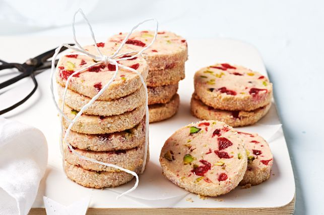

Almond and cherry cookies

description:
These classic almond and cherry cookies make the perfect home baked gift and they can be made ahead of time!
Ingredients:
- 160g butter, softened
- 1/2 cup (110g) Caster Sugar
- Free Range Eggs
- 1 tsp almond essence
- 1/4 tsp pink liquid food colouring
- 2 cups (300g) plain flour
- 1 cup (120g) almond meal
- 200g pkt red glacé cherries, coarsely chopped
- 1/2 cup (70g) pistachios, coarsely chopped
- 1/2 cup (40g) desiccated coconut
Instructions:
- Line 2 baking trays with baking paper. Use an electric mixer to beat the butter, sugar, eggs, almond essence and food colouring in a large bowl until well combined. Stir in the flour and almond meal. Add the cherry and pistachio and stir until well combined.
- Turn the dough onto a lightly floured surface and gently knead until smooth. Divide into 2 even portions. Roll each portion into a 22cm log. Place the coconut on a plate. Roll the logs in coconut to coat. Cover with plastic wrap. Place in the fridge for 30 mins to chill.
- Preheat oven to 160°C. Cut the logs into 1cm-thick slices. Place the slices on the trays, about 3cm apart. Bake for 20 mins or until golden and firm. Transfer the cookies to a wire rack to cool completely.
Return To Home